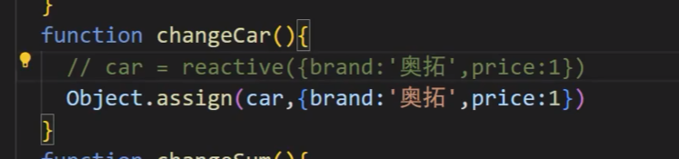
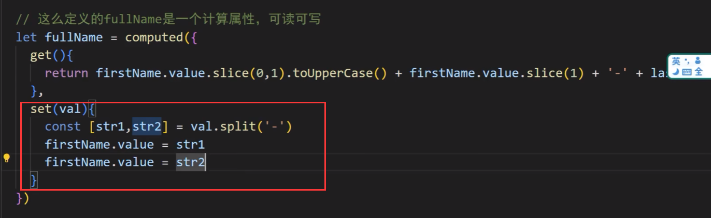

摘自 https://cn.vuejs.org/guide/
# 模板语法
# 文本插值
最基本的数据绑定形式是文本插值，它使用的是 “Mustache” 语法 (即双大括号)：
template
<span>Message: {{ msg }}</span>
双大括号标签会被替换为相应组件实例中 msg 属性的值。同时每次 msg 属性更改时它也会同步更新。
# Attribute 绑定
双大括号不能在 HTML attributes 中使用。想要响应式地绑定一个 attribute，应该使用 v-bind 指令：
template
<div v-bind:id="dynamicId"></div>
v-bind 指令指示 Vue 将元素的 id attribute 与组件的 dynamicId 属性保持一致。如果绑定的值是 null 或者 undefined ，那么该 attribute 将会从渲染的元素上移除。
简写
<div :id="dynamicId"></div>
# 动态绑定多个值
如果你有像这样的一个包含多个 attribute 的 JavaScript 对象：
const objectOfAttrs = {
id: 'container',
class: 'wrapper',
style: 'background-color:green'
}
通过不带参数的 v-bind ，你可以将它们绑定到单个元素上：
template
<div v-bind="objectOfAttrs"></div>
# 使用 JavaScript 表达式
至此，我们仅在模板中绑定了一些简单的属性名。但是 Vue 实际上在所有的数据绑定中都支持完整的 JavaScript 表达式：
template
{{ number + 1 }}
{{ ok ? 'YES' : 'NO' }}
{{ message.split('').reverse().join('') }}
<div :id="`list-${id}`"></div>
这些表达式都会被作为 JavaScript ，以当前组件实例为作用域解析执行。
在 Vue 模板内，JavaScript 表达式可以被使用在如下场景上：
- 在文本插值中 (双大括号)
- 在任何 Vue 指令 (以
v-开头的特殊 attribute) attribute 的值中
# 调用函数
可以在绑定的表达式中使用一个组件暴露的方法：
template
<time :title="toTitleDate(date)" :datetime="date">
{{ formatDate(date) }}
</time>
TIP
绑定在表达式中的方法在组件每次更新时都会被重新调用，因此不应该产生任何副作用，比如改变数据或触发异步操作。
# 指令 Directives
指令是带有 v- 前缀的特殊 attribute。Vue 提供了许多内置指令
指令 attribute 的期望值为一个 JavaScript 表达式 (除了少数几个例外，即之后要讨论到的 v-for 、 v-on 和 v-slot )。一个指令的任务是在其表达式的值变化时响应式地更新 DOM。以 v-if 为例：
<p v-if="seen">Now you see me</p>
这里， v-if 指令会基于表达式 seen 的值的真假来移除 / 插入该 <p> 元素。
# 参数 Arguments
某些指令会需要一个 “参数”，在指令名后通过一个冒号隔开做标识。例如用 v-bind 指令来响应式地更新一个 HTML attribute：
template
<a v-bind:href="url"> ... </a>
<!-- 简写 -->
<a :href="url"> ... </a>
这里 href 就是一个参数，它告诉 v-bind 指令将表达式 url 的值绑定到元素的 href attribute 上。在简写中，参数前的一切 (例如 v-bind: ) 都会被缩略为一个 : 字符。
另一个例子是 v-on 指令，它将监听 DOM 事件：
<a v-on:click="doSomething"> ... </a>
<!-- 简写 -->
<a @click="doSomething"> ... </a>
这里的参数是要监听的事件名称： click 。 v-on 有一个相应的缩写，即 @ 字符。我们之后也会讨论关于事件处理的更多细节。
# 动态参数
同样在指令参数上也可以使用一个 JavaScript 表达式，需要包含在一对方括号内：
template
<!--
注意，参数表达式有一些约束，
参见下面“动态参数值的限制”与“动态参数语法的限制”章节的解释
-->
<a v-bind:[attributeName]="url"> ... </a>
<!-- 简写 -->
<a :[attributeName]="url"> ... </a>
这里的 attributeName 会作为一个 JavaScript 表达式被动态执行，计算得到的值会被用作最终的参数。举例来说，如果你的组件实例有一个数据属性 attributeName ，其值为 "href" ，那么这个绑定就等价于 v-bind:href 。
相似地，你还可以将一个函数绑定到动态的事件名称上：
template
<a v-on:[eventName]="doSomething"> ... </a>
<!-- 简写 -->
<a @[eventName]="doSomething"> ... </a>
在此示例中，当 eventName 的值是 "focus" 时， v-on:[eventName] 就等价于 v-on:focus 。
# 动态参数值的限制
动态参数中表达式的值应当是一个字符串，或者是 null 。特殊值 null 意为显式移除该绑定。其他非字符串的值会触发警告。
# 动态参数语法的限制
动态参数表达式因为某些字符的缘故有一些语法限制，比如空格和引号，在 HTML attribute 名称中都是不合法的。例如下面的示例：
template
<!-- 这会触发一个编译器警告 -->
<a :['foo' + bar]="value"> ... </a>
如果你需要传入一个复杂的动态参数，我们推荐使用计算属性替换复杂的表达式，也是 Vue 最基础的概念之一，我们很快就会讲到。
当使用 DOM 内嵌模板 (直接写在 HTML 文件里的模板) 时，我们需要避免在名称中使用大写字母，因为浏览器会强制将其转换为小写：
template
<a :[someAttr]="value"> ... </a>
上面的例子将会在 DOM 内嵌模板中被转换为 :[someattr] 。如果你的组件拥有 “someAttr” 属性而非 “someattr”，这段代码将不会工作。单文件组件内的模板不受此限制。
完整的指令语法

# 响应式基础
# 声明响应式状态
# ref()
在组合式 API 中，推荐使用 ref() 函数来声明响应式状态：
import { ref } from 'vue'
const count = ref(0)
ref() 接收参数，并将其包裹在一个带有 .value 属性的 ref 对象中返回：
const count = ref(0)
console.log(count) // { value: 0 }
console.log(count.value) // 0
count.value++
console.log(count.value) // 1
参考：为 refs 标注类型
要在组件模板中访问 ref，请从组件的 setup() 函数中声明并返回它们：
js
import { ref } from 'vue'
export default {
// `setup` 是一个特殊的钩子，专门用于组合式 API。
setup() {
const count = ref(0)
// 将 ref 暴露给模板
return {
count
}
}
}
template
<div>{{ count }}</div>
注意，在模板中使用 ref 时，我们不需要附加 .value 。为了方便起见，当在模板中使用时，ref 会自动解包 (有一些注意事项)。
你也可以直接在事件监听器中改变一个 ref：
template
<button @click="count++">
{{ count }}
</button>
对于更复杂的逻辑，我们可以在同一作用域内声明更改 ref 的函数，并将它们作为方法与状态一起公开：
js
import { ref } from 'vue'
export default {
setup() {
const count = ref(0)
function increment() {
// 在 JavaScript 中需要 .value
count.value++
}
// 不要忘记同时暴露 increment 函数
return {
count,
increment
}
}
}
然后，暴露的方法可以被用作事件监听器：
template
<button @click="increment">
{{ count }}
</button>
这里是 Codepen 上的例子，没有使用任何构建工具。
# <script setup>
在 setup() 函数中手动暴露大量的状态和方法非常繁琐。幸运的是，我们可以通过使用单文件组件 (SFC) 来避免这种情况。我们可以使用 <script setup> 来大幅度地简化代码：
vue
<script setup>
import { ref } from 'vue'
const count = ref(0)
function increment() {
count.value++
}
</script>
<template>
<button @click="increment">
{{ count }}
</button>
</template>
<script setup> 中的顶层的导入、声明的变量和函数可在同一组件的模板中直接使用。你可以理解为模板是在同一作用域内声明的一个 JavaScript 函数 —— 它自然可以访问与它一起声明的所有内容。
TIP
在指南的后续章节中，我们基本上都会在组合式 API 示例中使用单文件组件 + <script setup> 的语法，因为大多数 Vue 开发者都会这样使用。
如果你没有使用单文件组件，你仍然可以在 setup() 选项中使用组合式 API。
# 为什么要使用 ref？
你可能会好奇：为什么我们需要使用带有 .value 的 ref，而不是普通的变量？为了解释这一点，我们需要简单地讨论一下 Vue 的响应式系统是如何工作的。
当你在模板中使用了一个 ref，然后改变了这个 ref 的值时，Vue 会自动检测到这个变化，并且相应地更新 DOM。这是通过一个基于依赖追踪的响应式系统实现的。当一个组件首次渲染时，Vue 会追踪在渲染过程中使用的每一个 ref。然后，当一个 ref 被修改时，它会触发追踪它的组件的一次重新渲染。
在标准的 JavaScript 中，检测普通变量的访问或修改是行不通的。然而，我们可以通过 getter 和 setter 方法来拦截对象属性的 get 和 set 操作。
该 .value 属性给予了 Vue 一个机会来检测 ref 何时被访问或修改。在其内部，Vue 在它的 getter 中执行追踪，在它的 setter 中执行触发。从概念上讲，你可以将 ref 看作是一个像这样的对象：
js
// 伪代码，不是真正的实现
const myRef = {
_value: 0,
get value() {
track()
return this._value
},
set value(newValue) {
this._value = newValue
trigger()
}
}
另一个 ref 的好处是，与普通变量不同，你可以将 ref 传递给函数，同时保留对最新值和响应式连接的访问。当将复杂的逻辑重构为可重用的代码时，这将非常有用。
该响应性系统在深入响应式原理章节中有更详细的讨论。
# 深层响应性
Ref 可以持有任何类型的值，包括深层嵌套的对象、数组或者 JavaScript 内置的数据结构，比如 Map 。
Ref 会使它的值具有深层响应性。这意味着即使改变嵌套对象或数组时，变化也会被检测到：
js
import { ref } from 'vue'
const obj = ref({
nested: { count: 0 },
arr: ['foo', 'bar']
})
function mutateDeeply() {
// 以下都会按照期望工作
obj.value.nested.count++
obj.value.arr.push('baz')
}
非原始值将通过 reactive() 转换为响应式代理，该函数将在后面讨论。
也可以通过 shallow ref 来放弃深层响应性。对于浅层 ref，只有 .value 的访问会被追踪。浅层 ref 可以用于避免对大型数据的响应性开销来优化性能、或者有外部库管理其内部状态的情况。
阅读更多：
- 减少大型不可变数据的响应性开销
- 与外部状态系统集成
# DOM 更新时机
当你修改了响应式状态时，DOM 会被自动更新。但是需要注意的是，DOM 更新不是同步的。Vue 会在 “next tick” 更新周期中缓冲所有状态的修改，以确保不管你进行了多少次状态修改，每个组件都只会被更新一次。
要等待 DOM 更新完成后再执行额外的代码，可以使用 nextTick() 全局 API：
js
import { nextTick } from 'vue'
async function increment() {
count.value++
await nextTick()
// 现在 DOM 已经更新了
}
# reactive()
reactive()...
# 额外的 ref 解包细节
# 作为 reactive 对象的属性
一个 ref 会在作为响应式对象的属性被访问或修改时自动解包。换句话说，它的行为就像一个普通的属性：
js
const count = ref(0)
const state = reactive({
count
})
console.log(state.count) // 0
state.count = 1
console.log(count.value) // 1
如果将一个新的 ref 赋值给一个关联了已有 ref 的属性，那么它会替换掉旧的 ref：
js
const otherCount = ref(2)
state.count = otherCount
console.log(state.count) // 2
// 原始 ref 现在已经和 state.count 失去联系
console.log(count.value) // 1
只有当嵌套在一个深层响应式对象内时，才会发生 ref 解包。当其作为浅层响应式对象的属性被访问时不会解包。
# 数组和集合的注意事项
与 reactive 对象不同的是，当 ref 作为响应式数组或原生集合类型 (如 Map ) 中的元素被访问时，它不会被解包：
js
const books = reactive([ref('Vue 3 Guide')])
// 这里需要 .value
console.log(books[0].value)
const map = reactive(new Map([['count', ref(0)]]))
// 这里需要 .value
console.log(map.get('count').value)
# 在模板中解包的注意事项
在模板渲染上下文中，只有顶级的 ref 属性才会被解包。
在下面的例子中， count 和 object 是顶级属性，但 object.id 不是：
js
const count = ref(0)
const object = { id: ref(1) }
因此，这个表达式按预期工作：
template
{{ count + 1 }}
... 但这个不会：
template
{{ object.id + 1 }}
渲染的结果将是 [object Object]1 ，因为在计算表达式时 object.id 没有被解包，仍然是一个 ref 对象。为了解决这个问题，我们可以将 id 解构为一个顶级属性：
js
const { id } = object
template
{{ id + 1 }}
现在渲染的结果将是 2 。
另一个需要注意的点是，如果 ref 是文本插值的最终计算值 (即 {{ }} 标签)，那么它将被解包，因此以下内容将渲染为 1 ：
template
{{ object.id }}
该特性仅仅是文本插值的一个便利特性，等价于 {{ object.id.value }} 。
# 计算属性
# 基础示例
模板中的表达式虽然方便，但也只能用来做简单的操作。如果在模板中写太多逻辑，会让模板变得臃肿，难以维护。比如说，我们有这样一个包含嵌套数组的对象：
js
const author = reactive({
name: 'John Doe',
books: [
'Vue 2 - Advanced Guide',
'Vue 3 - Basic Guide',
'Vue 4 - The Mystery'
]
})
我们想根据 author 是否已有一些书籍来展示不同的信息：
template
<p>Has published books:</p>
<span>{{ author.books.length > 0 ? 'Yes' : 'No' }}</span>
这里的模板看起来有些复杂。我们必须认真看好一会儿才能明白它的计算依赖于 author.books 。更重要的是，如果在模板中需要不止一次这样的计算，我们可不想将这样的代码在模板里重复好多遍。
因此我们推荐使用计算属性来描述依赖响应式状态的复杂逻辑。这是重构后的示例：
vue
<script setup>
import { reactive, computed } from 'vue'
const author = reactive({
name: 'John Doe',
books: [
'Vue 2 - Advanced Guide',
'Vue 3 - Basic Guide',
'Vue 4 - The Mystery'
]
})
// 一个计算属性 ref
const publishedBooksMessage = computed(() => {
return author.books.length > 0 ? 'Yes' : 'No'
})
</script>
<template>
<p>Has published books:</p>
<span>{{ publishedBooksMessage }}</span>
</template>
在演练场中尝试一下
我们在这里定义了一个计算属性 publishedBooksMessage 。 computed() 方法期望接收一个 getter 函数，返回值为一个计算属性 ref。和其他一般的 ref 类似，你可以通过 publishedBooksMessage.value 访问计算结果。计算属性 ref 也会在模板中自动解包，因此在模板表达式中引用时无需添加 .value 。
Vue 的计算属性会自动追踪响应式依赖。它会检测到 publishedBooksMessage 依赖于 author.books ，所以当 author.books 改变时，任何依赖于 publishedBooksMessage 的绑定都会同时更新。
也可参考：为计算属性标注类型
# 计算属性缓存 vs 方法
你可能注意到我们在表达式中像这样调用一个函数也会获得和计算属性相同的结果：
template
<p>{{ calculateBooksMessage() }}</p>
js
// 组件中
function calculateBooksMessage() {
return author.books.length > 0 ? 'Yes' : 'No'
}
若我们将同样的函数定义为一个方法而不是计算属性，两种方式在结果上确实是完全相同的，然而，不同之处在于计算属性值会基于其响应式依赖被缓存。一个计算属性仅会在其响应式依赖更新时才重新计算。这意味着只要 author.books 不改变，无论多少次访问 publishedBooksMessage 都会立即返回先前的计算结果，而不用重复执行 getter 函数。
这也解释了为什么下面的计算属性永远不会更新，因为 Date.now() 并不是一个响应式依赖：
js
const now = computed(() => Date.now())
相比之下，方法调用总是会在重渲染发生时再次执行函数。
为什么需要缓存呢？想象一下我们有一个非常耗性能的计算属性 list ，需要循环一个巨大的数组并做许多计算逻辑，并且可能也有其他计算属性依赖于 list 。没有缓存的话，我们会重复执行非常多次 list 的 getter，然而这实际上没有必要！如果你确定不需要缓存，那么也可以使用方法调用。
# 可写计算属性
计算属性默认是只读的。当你尝试修改一个计算属性时，你会收到一个运行时警告。只在某些特殊场景中你可能才需要用到 “可写” 的属性，你可以通过同时提供 getter 和 setter 来创建：
vue
<script setup>
import { ref, computed } from 'vue'
const firstName = ref('John')
const lastName = ref('Doe')
const fullName = computed({
// getter
get() {
return firstName.value + ' ' + lastName.value
},
// setter
set(newValue) {
// 注意：我们这里使用的是解构赋值语法
[firstName.value, lastName.value] = newValue.split(' ')
}
})
</script>
现在当你再运行 fullName.value = 'John Doe' 时，setter 会被调用而 firstName 和 lastName 会随之更新。
# 最佳实践
# Getter 不应有副作用
计算属性的 getter 应只做计算而没有任何其他的副作用，这一点非常重要，请务必牢记。举例来说，不要改变其他状态、在 getter 中做异步请求或者更改 DOM！一个计算属性的声明中描述的是如何根据其他值派生一个值。因此 getter 的职责应该仅为计算和返回该值。在之后的指引中我们会讨论如何使用侦听器根据其他响应式状态的变更来创建副作用。
# 避免直接修改计算属性值
从计算属性返回的值是派生状态。可以把它看作是一个 “临时快照”，每当源状态发生变化时，就会创建一个新的快照。更改快照是没有意义的，因此计算属性的返回值应该被视为只读的，并且永远不应该被更改 —— 应该更新它所依赖的源状态以触发新的计算。
# Class 与 Style 绑定
数据绑定的一个常见需求场景是操纵元素的 CSS class 列表和内联样式。因为 class 和 style 都是 attribute，我们可以和其他 attribute 一样使用 v-bind 将它们和动态的字符串绑定。但是，在处理比较复杂的绑定时，通过拼接生成字符串是麻烦且易出错的。因此，Vue 专门为 class 和 style 的 v-bind 用法提供了特殊的功能增强。除了字符串外，表达式的值也可以是对象或数组。
# 绑定 HTML class
# 绑定一个返回对象
我们也可以绑定一个返回对象的计算属性。这是一个常见且很有用的技巧：
js
const isActive = ref(true)
const error = ref(null)
const classObject = computed(() => ({
active: isActive.value && !error.value,
'text-danger': error.value && error.value.type === 'fatal'
}))
template
<div :class="classObject"></div>
# 绑定数组
然而，这可能在有多个依赖条件的 class 时会有些冗长。因此也可以在数组中嵌套对象：
template
<div :class="[{ [activeClass]: isActive }, errorClass]"></div>
# 绑定内联样式
# 样式多值
你可以对一个样式属性提供多个 (不同前缀的) 值，举例来说：
template
<div :style="{ display: ['-webkit-box', '-ms-flexbox', 'flex'] }"></div>
数组仅会渲染浏览器支持的最后一个值。在这个示例中，在支持不需要特别前缀的浏览器中都会渲染为 display: flex 。
# 条件渲染
# v-else-if
顾名思义， v-else-if 提供的是相应于 v-if 的 “else if 区块”。它可以连续多次重复使用：
template
<div v-if="type === 'A'">
A
</div>
<div v-else-if="type === 'B'">
B
</div>
<div v-else-if="type === 'C'">
C
</div>
<div v-else>
Not A/B/C
</div>
# <template> 上的 v-if
因为 v-if 是一个指令，他必须依附于某个元素。但如果我们想要切换不止一个元素呢？在这种情况下我们可以在一个 <template> 元素上使用 v-if ，这只是一个不可见的包装器元素，最后渲染的结果并不会包含这个 <template> 元素。
template
<template v-if="ok">
<h1>Title</h1>
<p>Paragraph 1</p>
<p>Paragraph 2</p>
</template>
v-else 和 v-else-if 也可以在 <template> 上使用。
# v-show []
另一个可以用来按条件显示一个元素的指令是 v-show 。其用法基本一样：
template
<h1 v-show="ok">Hello!</h1>
不同之处在于 v-show 会在 DOM 渲染中保留该元素； v-show 仅切换了该元素上名为 display 的 CSS 属性。
v-show 不支持在 <template> 元素上使用，也不能和 v-else 搭配使用。
# v-if vs. v-show []
v-if 是 “真实的” 按条件渲染，因为它确保了在切换时，条件区块内的事件监听器和子组件都会被销毁与重建。
v-if 也是惰性的：如果在初次渲染时条件值为 false，则不会做任何事。条件区块只有当条件首次变为 true 时才被渲染。
相比之下， v-show 简单许多，元素无论初始条件如何，始终会被渲染，只有 CSS display 属性会被切换。
总的来说， v-if 有更高的切换开销，而 v-show 有更高的初始渲染开销。因此，如果需要频繁切换，则使用 v-show 较好；如果在运行时绑定条件很少改变，则 v-if 会更合适。
# v-if 和 v-for []
警告
同时使用 v-if 和 v-for 是不推荐的，因为这样二者的优先级不明显。请查看风格指南获得更多信息。
当 v-if 和 v-for 同时存在于一个元素上的时候， v-if 会首先被执行。请查看列表渲染指南获取更多细节。
# 列表渲染
# v-for
在 v-for 块中可以完整地访问父作用域内的属性和变量。 v-for 也支持使用可选的第二个参数表示当前项的位置索引。
js
const parentMessage = ref('Parent')
const items = ref([{ message: 'Foo' }, { message: 'Bar' }])
template
<li v-for="(item, index) in items">
{{ parentMessage }} - {{ index }} - {{ item.message }}
</li>
# 使用解构
注意 v-for 是如何对应 forEach 回调的函数签名的。实际上，你也可以在定义 v-for 的变量别名时使用解构，和解构函数参数类似：
template
<li v-for="{ message } in items">
// message是item的属性名，可解构
{{ message }}
</li>
<!-- 有 index 索引时 -->
<li v-for="({ message }, index) in items">
{{ message }} {{ index }}
</li>
# v-for 与对象
你也可以使用 v-for 来遍历一个对象的所有属性。遍历的顺序会基于对该对象调用 Object.values() 的返回值来决定。
<li v-for="(value, key, index) in myObject">
{{ index }}. {{ key }}: {{ value }}
</li>
# 在 v-for 里使用范围值
v-for 可以直接接受一个整数值。在这种用例中，会将该模板基于 1...n 的取值范围重复多次。
template
<span v-for="n in 10">{{ n }}</span>
注意此处 n 的初值是从 1 开始而非 0 。
# 通过 key 管理状态
Vue 默认按照 “就地更新” 的策略来更新通过 v-for 渲染的元素列表。当数据项的顺序改变时，Vue 不会随之移动 DOM 元素的顺序，而是就地更新每个元素，确保它们在原本指定的索引位置上渲染。
默认模式是高效的，但只适用于列表渲染输出的结果不依赖子组件状态或者临时 DOM 状态 (例如表单输入值) 的情况。
为了给 Vue 一个提示，以便它可以跟踪每个节点的标识，从而重用和重新排序现有的元素，你需要为每个元素对应的块提供一个唯一的 key attribute：
template
<div v-for="item in items" :key="item.id">
<!-- 内容 -->
</div>
注意
key 在这里是一个通过 v-bind 绑定的特殊 attribute。请不要和在 v-for 中使用对象里所提到的对象属性名相混淆。
# 续
# reactive 响应式对象
不能重新赋值一个对象，可以借用 Object.assign ()
ref () 则可以修改 car.value = {…}

使用原则:
- 若需要一个基本类型的响应式数据，必须使用 ref
- 若需要一个响应式对象，层级不深， ref、reactive 都可以
- 若需要一个响应式对象，且层级较深推荐使用 reactive
toRefs / toRef
Obj obj = toRefs(obj)
Param p = toRef(obj, param)
# 计算属性
